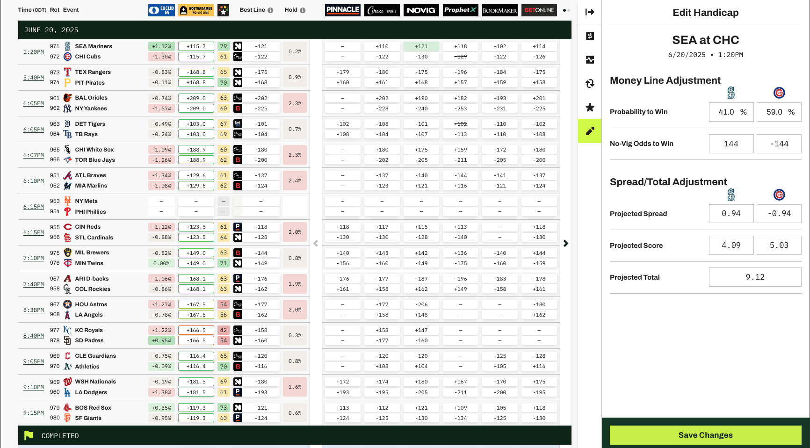

I compare my own projections to real-time odds across 50+ sportsbooks. GamedayMath gives me instant access to expected value, injury impact, and market movement — all in one dashboard built for bettors.
The GamedayMath Odds Dashboard is your one-stop-shop for betting insight. It pulls live lines from over 50 sportsbooks—including Pinnacle, Circa, and BookMaker—across major leagues worldwide. Get a real-time view of market movement and pricing to sharpen your edge.
Pascal’s Picks is GamedayMath’s real-time AI engine that identifies the best bets on the board as they emerge. It combines the power of the Nostradamus No-Vig Line, Euclid’s EV formula, and Bet Score to highlight top plays instantly—no digging, no guessing. The edge is surfaced for you, in real time.
Start handicapping games with top-of-the-line software designed to help you set your own numbers. GamedayMath delivers exclusive player value data, showing how injuries impact spreads and totals in real time. With injury adjustments, line movement predictors, and closing line tracking all in one platform, you’ll have everything you need to beat the market—not just follow it.